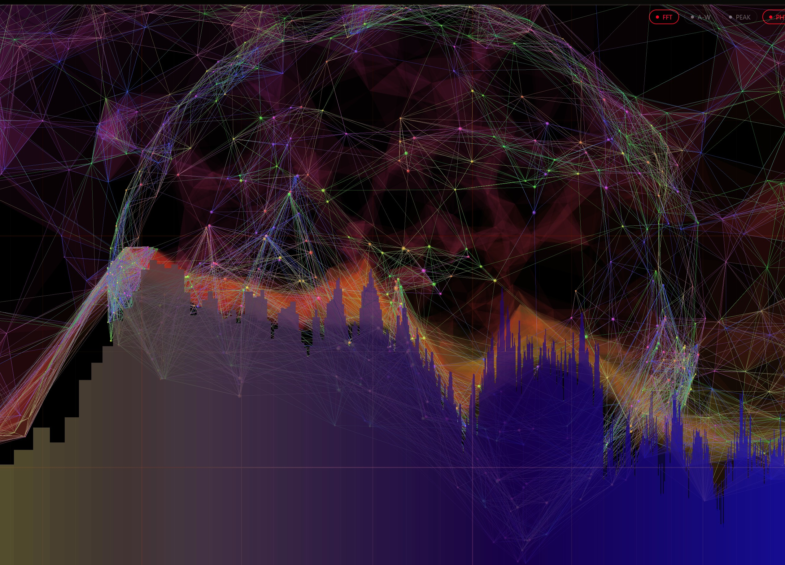
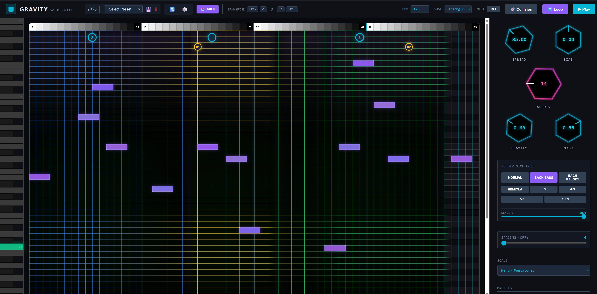
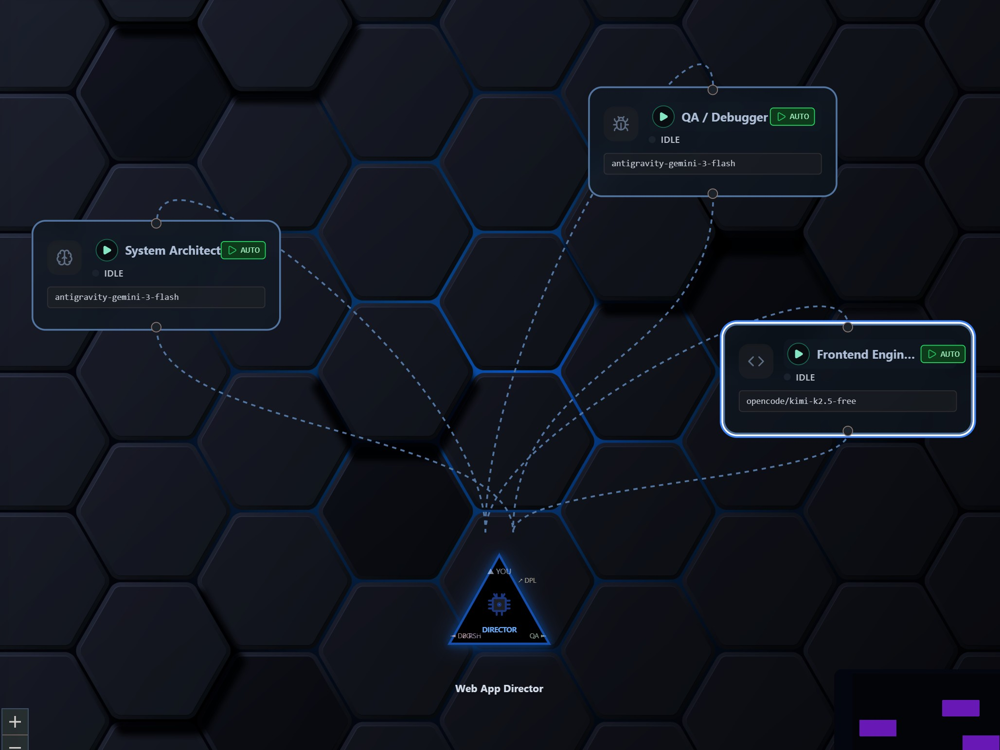
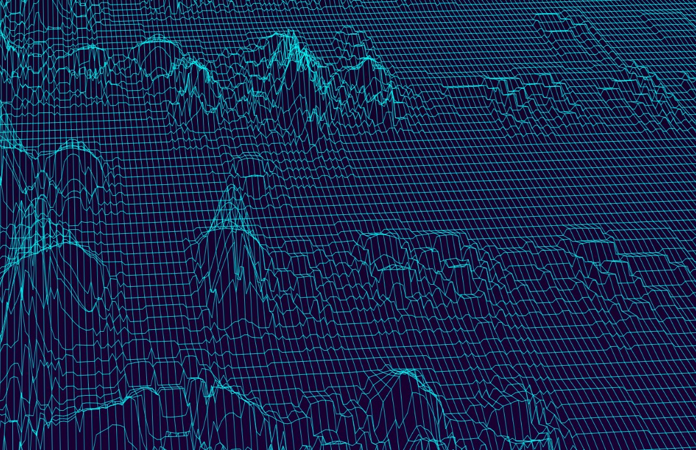

ОБО МНЕ
Я создаю визуальные оркестраторы для мультиагентных систем, которые позволяют наблюдать за созданием и поведением моделей ИИ в реальном времени.
За последний год я разработал более 10 сложных продуктов. Мой стек объединяет CLI, API и локальные модели в автономные системы из ИИ-агентов для кодинга приложений или имитирующие поведение человека с определенной базой знаний внутри.
Я создаю системы с нуля: от Lazy IDE Coder (кастомная IDE, связывающая LLM с визуальными нодами) и специализированных RAG-пайплайнов (бот-психотерапевт, векторизованный по 30+ книгам) до PayNode Router (агрегация live-метрик из 50+ глобальных систем).
Я непрерывно учусь; ИИ восхищает и вдохновляет меня. В отличие от многих, я замечаю, что ИИ-модели склонны «лениться» и обходить задачи до тех пор, пока не возьмешь процесс под полный контроль и не проверишь их работу.
Мой бэкграунд в психологии позволяет разрабатывать пользовательские сценарии, которые по-настоящему понятны людям, даже если «под капотом» работает невероятно сложная логическая система. Мои проекты никогда не бывают статичными: они интерактивны, генерируют ноды или реагируют на звуковые частоты.
В таких проектах, как социальные сети или финансовые системы, заложено много уникальных идей, которыми я готов поделиться с лучшей командой, но не в резюме.
ОПЫТ РАБОТЫ
- Lazy IDE Coder: Мультиагентный оркестратор, связывающий CLI, API и локальные модели с отдельными визуальными нодами с механикой спавна в реальном времени для генерации кода.
- Диалоговый автоответчик: Система с долгосрочной памятью о пользователе (БД), симулирующая человеческий ввод текста в реальном времени (Стек: Скрипты, Логика, SQLite, Firebase Hosting, VPS-сервер, Windows App).
- PayNode: FinTech-калькулятор маршрутизации, агрегирующий данные о комиссиях из 50+ глобальных систем в реальном времени (Стек: Скрипты, Таблицы, Логика, DeepResearch, Frontend, Backend).
- RAG-бот (Психотерапевт): Специализированная система, векторизовавшая 30+ ключевых профессиональных книг для контекстно-точных рассуждений ИИ.
- Market App: Полномасштабный Android-маркетплейс с интеграцией платежных шлюзов и сложной backend-логикой (Frontend, Backend, Дизайн, Свайп и удобство).
- Проектирую 3D-визуальную социальную платформу нового поколения для фундаментального изменения способов общения, творчества и обмена ценностями в сообществах.
- Разработка в Unreal Engine для сред с full-body трекингом в реальном времени.
- Настройка с нуля до живой реат-тайм трансляции: ретаргетинг, блупринты, создание сцен и освещения.
- Разработал сверхсложную MIDI-архитектуру и движок генерации полиритмов, превосходящий возможности человека.
- Создал высокопроизводительные браузерные генераторы аудиосигналов и веб-анализаторы спектра (Spectrum Analyser, 3D Audio Analyser).
- Прошел путь от реверс-инжиниринга к реализации собственных уникальных идей.
PROJECTS

Spectrum Analyser
Визуализация частот в реальном времени.

MIDI Generator
Генератор музыкальных MIDI паттернов со сложной логикой и вычислениями.

AI Agent Orchestrator
Визуальный интерфейс для управления группой автономных ИИ-агентов в реальном времени.

3D Motion Tracking
Система захвата движений всего тела на базе Unreal Engine для виртуальных миров.
ОБРАЗОВАНИЕ
Продвинутая трехлетняя программа трансформации.
- Глубокая трансформация личности, поведенческая психология, работа с импринтами.
- Командные упражнения и стрессовые сценарии для развития высшего уровня EQ и стрессоустойчивости.
- Компетенции: архитектура нервной системы, перепрограммирование психики, уверенность и лидерство.
Эта мощная психологическая база дает мне фреймворки для создания технологий, которые ощущаются по-настоящему «живыми».